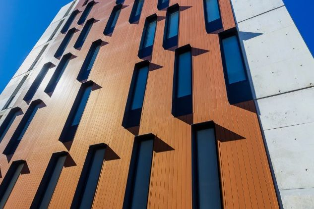

Most people searching for "FRAEW cost" aren't looking for marketing copy — they're trying to work out whether a quote they've received is reasonable, what's driving the price, and whether there's anything they can do to keep costs proportionate. That's a fair question, and it deserves a straight answer rather than a single number that won't apply to their building anyway.
There is no fixed or industry-standard price for a FRAEW. Every building is different, and a credible fire engineer or facade consultant will always want to understand your specific building before quoting. What we can do here is explain the variables that drive cost up or down, so you can read a quotation with more confidence and ask better questions of whoever you appoint.
A quick answer
Based on projects Wrightwood has been involved with, relatively straightforward FRAEW assessments have cost in the region of £3,000, while larger or more complex schemes have been closer to £10,000.
These are examples from real projects, not a fixed price range or a quotation — actual cost depends on your building's size and complexity, its external wall construction, the information already available, and whether intrusive investigations are required.
What is a FRAEW?
A FRAEW — Fire Risk Appraisal of External Walls — is a structured assessment of a building's external wall construction, carried out to identify whether it presents an unacceptable risk to life safety in the event of fire. It looks at the materials used in the wall build-up, insulation, cavity barriers, balconies, and other features that can affect how fire and smoke might spread up or across a building's facade.
In the UK, FRAEWs are now generally carried out in line with PAS 9980:2022, a code of practice published by the British Standards Institution. PAS 9980 sets out a consistent methodology for assessing external wall fire risk on existing blocks of flats, rather than leaving each assessor to invent their own approach. In practice, "a FRAEW" and "a PAS 9980 appraisal" are usually the same exercise — the FRAEW is the appraisal itself, and PAS 9980 is the recognised standard it should be assessed against.
The output is a written report that sets out the findings, assigns a risk rating to different aspects of the external wall system, and — where relevant — recommends further investigation, interim safety measures, or remediation works.
What does a FRAEW typically cost?
We won't invent a single headline figure, because any number we gave you would almost certainly be wrong for your building. A FRAEW survey cost and a FRAEW consultant cost are both quoted against the specific building in question — its size, its wall construction, and how much is already known about it — rather than against a standard price list.
That said, it helps to have a sense of scale. Based on projects Wrightwood has been involved with, a relatively straightforward FRAEW — typically a single block with reasonably good existing information and a fairly consistent wall construction — has cost in the region of £3,000. Larger or more complex schemes, particularly where several façade systems are involved, records are poor, or intrusive investigation is needed, have been closer to £10,000. These are examples from real projects rather than a fixed price range, and they shouldn't be read as a quotation for your building — the section below sets out the factors that actually determine where a specific project falls.
What we can do here is explain the variables that drive cost up or down, so you can read a quotation with more confidence and ask better questions of whoever you appoint.
What affects the cost of a FRAEW?
- Building height and size. Taller, larger buildings generally mean more facade area to assess, more complex access requirements, and — for higher-risk buildings — a more thorough level of scrutiny.
- Number and complexity of elevations. A simple rectangular block with four elevations is a very different exercise from a building with multiple wings, courtyards, or an irregular footprint.
- External wall build-ups. A single, uniform cladding system is quicker to assess than a building with several different wall constructions, render types, or cladding materials across different elevations or eras of construction.
- Number of different façade systems. Where a building has been altered, extended, or re-clad over time, an assessor may need to characterise and assess more than one system separately — each adding time to the appraisal.
- Availability of drawings and O&M information. If original design drawings, specifications, or operation and maintenance (O&M) records exist and are accessible, the assessor has a head start. Where nothing is available, more time is needed simply to establish what was actually built.
- Quality of existing records. Records that exist but are incomplete, contradictory, or unreliable can add cost, since the assessor has to verify rather than simply rely on them.
- Requirement for intrusive investigations or opening-up. Where drawings are absent, unreliable, or inconsistent with what's visible on site, physical opening-up of the wall may be needed to confirm construction. This adds cost — see the section below.
- Fire strategy information. Where a building's fire strategy, compartmentation details, or previous fire risk assessment are available, this can help the assessor form a more efficient and better-informed view of the external wall risk.
- PAS 9980 assessment complexity. Some buildings can be assessed relatively quickly under the PAS 9980 methodology; others — with mixed construction, unusual detailing, or multiple relevant risk factors — require a more detailed appraisal to reach a robust conclusion.
- Access requirements. Facades often can't be fully assessed from the ground. Depending on the building, access may require a cherry picker, scaffold towers, rope access, or in some cases a full scaffold — each with a different cost profile.
- Location. Travel time, regional rates, and the practicalities of arranging access equipment in a particular area can all influence price.
- Size of the development. A single block is priced differently to a multi-block estate, even where the buildings are similar, because of the additional coordination and reporting involved.
A specialist will usually want at least basic answers to most of these points — often via a short questionnaire or an initial desktop review — before providing a firm external wall fire risk assessment cost. Be wary of any fixed "one size fits all" price quoted without that conversation happening first.
Why do FRAEW costs vary so much?
The honest answer is that a FRAEW is not a standardised product in the way an EWS1 form might feel like one. It's a bespoke technical investigation, and the scope of that investigation depends entirely on what's already known — and not known — about the building.
Two buildings of an identical height and similar appearance can require very different levels of effort. One might have a full set of as-built drawings, a complete O&M file, and a single, well-documented cladding system — allowing the assessor to work efficiently from existing evidence. The other might have no reliable records, several different wall types installed at different times, and visible uncertainty about what lies beneath the render or cladding — requiring far more site time, more intrusive investigation, and more careful analysis before a robust conclusion can be reached.
Cost also reflects the level of professional risk and responsibility involved. A FRAEW carried out to PAS 9980 is a technical document that may be relied upon by leaseholders, lenders, insurers and funding bodies. The professional signing it off needs to be confident in their findings, which sometimes means more investigation than a quicker, less rigorous assessment might involve.
Does a FRAEW include intrusive investigations?
Not always — but it might. PAS 9980 encourages assessors to use existing evidence (drawings, specifications, previous survey reports, product certificates) wherever it is reliable and available. Where that evidence is sufficient to reach a confident conclusion, extensive opening-up may not be necessary.
Where records are incomplete, contradictory, or simply don't exist, the assessor may recommend a level of intrusive investigation — small, targeted openings in the wall to physically confirm what materials are present. This is not something that should be assumed either way before a competent assessor has looked at the available information; it's a professional judgement made on a case-by-case basis, and it's one of the main reasons FRAEW costs can move significantly once a site visit or initial review has taken place.
If your quotation doesn't clearly say whether intrusive investigation is included, excluded, or being priced separately as a provisional sum, that's worth clarifying before you commission the work.
FRAEW cost vs PAS 9980 cost
People searching for "PAS 9980 cost" are usually asking exactly the same question as "FRAEW cost" — the two aren't priced separately. PAS 9980 isn't a product or a certificate you purchase in its own right; it's the code of practice the FRAEW is assessed against. When a consultant quotes for "a FRAEW" or for "a PAS 9980 assessment," they're describing the same piece of work using different language.
Where the terminology does matter for cost is scope, not standard: a light-touch desktop review against PAS 9980 principles will cost less than a full PAS 9980 assessment with site inspection, risk-rating and, where necessary, intrusive investigation. It's worth confirming with your consultant exactly which of these they're quoting for, rather than assuming "PAS 9980 assessment" and "FRAEW" always mean identical scopes of work. See our separate guide to PAS 9980 for more on what the standard covers.
Who arranges a FRAEW?
In practice, a FRAEW is usually commissioned by whoever is responsible for the building — the freeholder, the managing agent acting on their behalf, or the directors of a Right to Manage (RTM) or resident management company. Leaseholders don't typically arrange the assessment directly, but they are usually the ones asking the questions that prompt it, and they are the ones affected by the outcome.
The assessment itself is carried out by a suitably qualified professional — typically a chartered fire engineer or an experienced facade/fire risk consultant with relevant competency in external wall assessment. Getting this appointment right matters: PAS 9980 places emphasis on the competence of the person carrying out the appraisal, not just the methodology followed.
This is where Wrightwood Consulting's role sits. We are a coordination and consultancy business — we do not carry out FRAEWs ourselves. Instead, we help building owners, managing agents and RTM companies identify what's needed, appoint an appropriately qualified fire engineer or facade consultant, brief them clearly on the building, and manage the process through to a usable report — including how that report feeds into funding applications, resident communication, and any remediation that follows.
Who pays for a FRAEW?
Responsibility for funding a FRAEW generally sits with whoever holds responsibility for the building — the freeholder, Responsible Entity, RTM or resident management company, usually acting through the managing agent. Service charge funds are the typical route where the cost falls within the terms of the lease, though this is a matter for the building's own legal and financial arrangements rather than something we can generalise about here.
Where a building later proves eligible for the Cladding Safety Scheme or the Building Safety Fund, reasonable FRAEW costs may be capable of reimbursement as part of the wider grant — but the Responsible Entity will typically need to fund the assessment upfront, before eligibility and reimbursement are confirmed. Our FRAEW & Cladding Safety Scheme FAQ covers this in more detail.
Can the Cladding Safety Scheme cover FRAEW costs?
This is a genuinely important question, and one where it's easy to find overconfident answers online. The Cladding Safety Scheme (CSS) is a government-backed scheme covering buildings between 11 and 18 metres in England — including, as of August 2026, a new funding route for eligible buildings under 11 metres — sitting alongside the Building Safety Fund (BSF) for buildings over 18 metres. Both schemes exist to support the remediation of unsafe cladding.
What counts as an eligible cost, and at what stage of a project, is set by the scheme's own rules — and those rules are administered centrally and can be updated over time. We're not going to state a blanket position here on whether your FRAEW will or won't be covered, because that depends on your building's specific circumstances and the scheme guidance in force at the time you apply. Our FRAEW & Cladding Safety Scheme FAQ looks at this question, and related ones, in more depth.
Our honest position
Eligibility for CSS support, including for assessment costs, should always be checked against current scheme guidance for your building's specific circumstances — not assumed from a general guide like this one.
Where a building may be eligible for the Cladding Safety Scheme, Wrightwood's role is to help building owners and managing agents understand the current position, coordinate the application, and keep the FRAEW, funding and remediation strands of the project working together rather than in isolation.
FRAEW vs EWS1 vs PAS 9980
These three terms get used almost interchangeably by leaseholders and directors, but they mean different things. Here's a straightforward comparison.
| Term | FRAEW | PAS 9980 | EWS1 |
|---|---|---|---|
| What it is | A fire risk appraisal of a building's external wall construction | The published code of practice that sets out how such an appraisal should be carried out | A standardised form summarising the external wall assessment, mainly for lending purposes |
| Purpose | To identify and evaluate fire risk in the external walls and inform any remediation needed | To provide a consistent, competent methodology so different assessors reach comparable conclusions | To give mortgage lenders and valuers a recognised reference point on external wall risk |
| Who produces it | A suitably qualified fire engineer or facade/fire risk consultant | Not a document you "get" — it's the standard the FRAEW should follow | A professional with the relevant expertise, based on the underlying assessment (which may include a FRAEW) |
| When it's used | When a building's external wall risk needs formal, detailed evaluation | Referenced whenever a FRAEW is commissioned in the UK | Requested by lenders during a sale, remortgage or valuation |
In short: PAS 9980 is the rulebook, the FRAEW is the detailed technical assessment carried out under that rulebook, and EWS1 is the short-form output sometimes used afterwards to satisfy a lender. A building can have a thorough FRAEW without an EWS1 ever being issued, and equally, an EWS1 should only ever be as reliable as the assessment behind it.
What happens after the FRAEW?
The FRAEW is the start of the journey, not the end of it. Broadly, the sequence looks like this:
- The fire engineer issues a written report with findings and a risk rating for the external wall system.
- Where risks are identified, the report sets out recommendations — which may range from minor interim measures through to full remediation of the wall system.
- Building owners and managing agents consider funding routes, such as the Building Safety Fund or the Cladding Safety Scheme, depending on the building's height and eligibility.
- Where remediation is needed, a wider professional team is appointed — architects, structural engineers, and a principal designer/contractor as required — to design and deliver the works.
- The project is coordinated through design, approval, procurement and construction, with regular communication to residents throughout.
- On completion, an EWS1 form can usually be issued (where relevant), supporting sales, remortgages and lease extensions.
Each of these stages involves different specialists, different timelines, and different documentation — which is exactly why building owners and RTM directors, who are rarely doing this more than once, often benefit from a single point of coordination across the whole journey.
How Wrightwood Consulting helps
Wrightwood Consulting is a coordination and consultancy business for building safety and cladding remediation projects. We don't carry out FRAEWs or PAS 9980 appraisals ourselves — our role is to make sure the right specialists are appointed, briefed properly, and kept aligned as your project moves from initial assessment through to certification.
In practice, that means helping you:
- Understand whether a FRAEW is likely to be needed, and what to expect from the process.
- Appoint an appropriately qualified fire engineer or facade consultant for your specific building.
- Interpret the findings of a FRAEW report and plan sensible next steps.
- Coordinate funding routes, including navigating the Building Safety Fund and Cladding Safety Scheme where applicable.
- Manage the wider remediation project once works are confirmed, from design through to EWS1 certification.
If you're facing a FRAEW cost quotation and aren't sure whether it's proportionate, or you simply don't know where to start, that's precisely the kind of conversation we have with managing agents, RTM directors and freeholders every week.
Frequently asked questions
How much does a FRAEW cost in the UK?
There's no standard UK price. As a general guide, based on projects Wrightwood has been involved with, relatively straightforward FRAEW assessments have cost around £3,000, while larger or more complex schemes have been closer to £10,000. These are examples from real projects, not a fixed price range — actual cost depends on the building's height, size, wall construction, how many façade systems are involved, and how much reliable information already exists.
Is a FRAEW the same as PAS 9980?
Not quite — PAS 9980 is the published code of practice that sets out how an external wall fire risk assessment should be carried out. A FRAEW is the assessment itself, normally carried out in accordance with PAS 9980. In everyday use, the two terms are often treated as interchangeable, and there's no separate "PAS 9980 cost" distinct from the FRAEW cost.
Does every building need a FRAEW?
No. Whether a FRAEW is needed depends on factors such as the building's height, external wall construction and any existing fire safety concerns. Our guide to whether you need a FRAEW covers this in more detail.
Who can carry out a FRAEW?
A FRAEW should be carried out by a suitably qualified and competent professional — typically a chartered fire engineer or an experienced facade/fire risk consultant with relevant expertise in external wall assessment. Wrightwood Consulting doesn't carry out FRAEWs itself; we coordinate the appointment of an appropriate specialist on your behalf.
Can the Cladding Safety Scheme pay for a FRAEW?
Potentially, where the building is accepted as eligible and the assessment meets the scheme's requirements — but this should always be checked against current scheme guidance for your building, not assumed. See our FRAEW & Cladding Safety Scheme FAQ for more.
How long does a FRAEW take?
Timescales vary with building size and complexity, access arrangements, and whether intrusive investigation is required. A straightforward building with good existing records will generally progress faster than a complex building requiring opening-up and specialist access equipment. Your appointed assessor should be able to give a realistic programme once they understand the building.
Does a FRAEW require intrusive surveys?
Not always. Whether intrusive investigation is necessary depends on how much reliable evidence already exists about the wall's construction. Where drawings and records are good, opening-up may be limited or unnecessary; where they are absent or inconsistent with what's visible on site, more investigation is usually required.
What is included in a FRAEW?
A FRAEW typically includes a review of available drawings and records, a site inspection of the external wall system, an assessment against the PAS 9980 methodology, a written risk-rated report, and recommendations for any further action needed. Intrusive investigation may or may not be included, depending on the building and the assessor's findings.
Do I need a FRAEW before applying for cladding funding?
Generally, funding schemes for cladding remediation need evidence of the fire risk before they will fund or approve works, and a FRAEW is the standard way of providing that evidence. Requirements can vary by scheme, so it's worth checking the current position for your building's height band and circumstances.